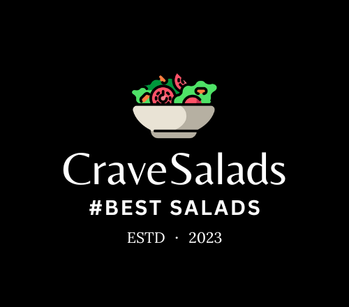
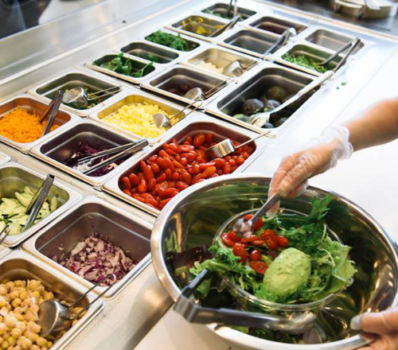
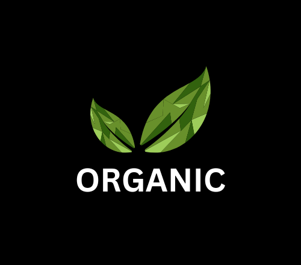

When you crave salads, come to CraveSalads

At CraveSalads, we have been serving delectable salads to our valued customers for five years. Located in Mumbai, we are passionate about creating nutritious, flavorful, and visually stunning salads that leave
a lasting impression on your palate. With our commitment to quality ingredients and innovative recipes, we strive to redefine the salad experience and promote a healthy lifestyle for all. Discover a world of vibrant flavors, nourishing ingredients, and creative salad combinations that will tantalize your taste buds and revitalize your well-being. we believe that healthy eating should never compromise on taste. Discover an exquisite array of handcrafted salads made from the finest locally sourced ingredients, delivering
a healthy and flavorful experience with every bowl.
CraveSalads began with a desire for fresh and delicious and healthy salads. Founded by Esha Dhuri in 2023, we aimed to revolutionize the salad industry. Using high-quality, locally sourced and pestisides free ingredients, CraveSalads quickly gained popularity for their mouthwatering flavor combinations and meticulous attention to detail. With a commitment to innovation and customer satisfaction, CraveSalads has grown to multiple locations and continues to provide a diverse menu that caters to various dietary preferences. CraveSalads continues to be a go-to destination for salad enthusiasts seeking a culinary adventure. We are grateful for the support of our loyal customers who have embraced our vision and made CraveSalads a part of their healthy lifestyle. Join the salad revolution at CraveSalads, where every bite is nothing but a flavorful and indulgent adventure crafted with passion and care.


At CraveSalads, we are dedicated to ensuring the highest quality and freshness in every bite. We prioritize locally sourced produce whenever possible, forging strong relationships with trusted farmers and suppliers in the region.We meticulously select each ingredient based on its flavor, texture, and nutritional value. From vibrant, crisp lettuce to ripe, juicy tomatoes, every component of our salads undergoes rigorous quality checks to meet our exacting standards. We opt for organic produce that is free from harmful pesticides and chemicals. We prioritize using premium, natural ingredients to craft house-made dressings, ensuring a delightful taste experience without compromising on quality. Through our menu descriptions, you'll discover the provenance of the vegetables, fruits, and other components that make up our salads.